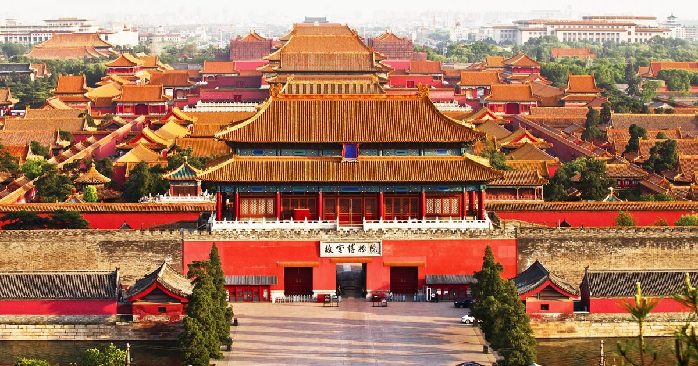
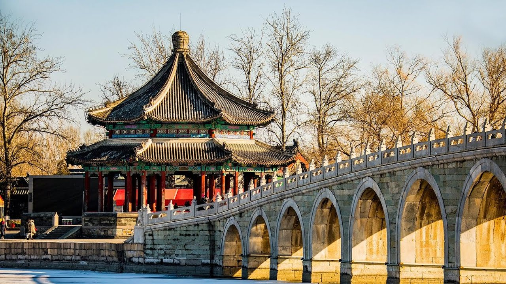
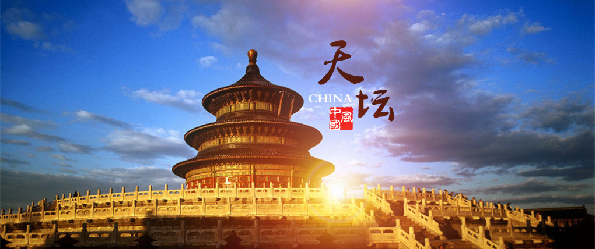
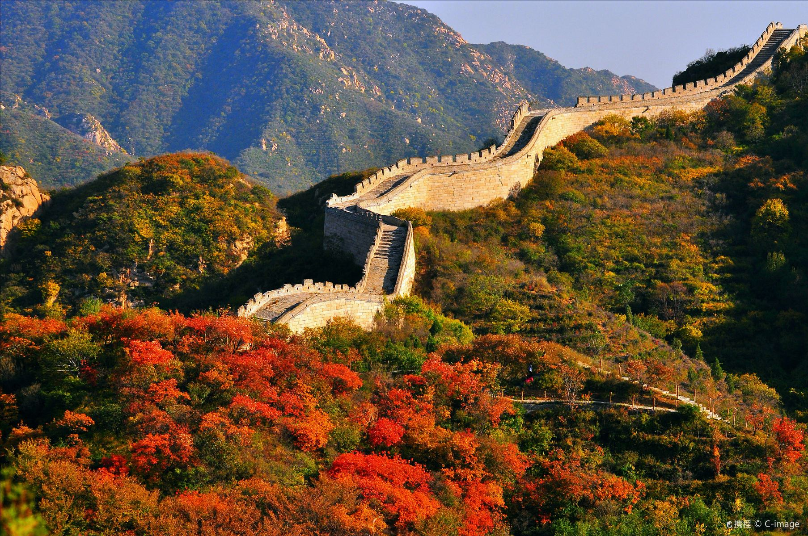
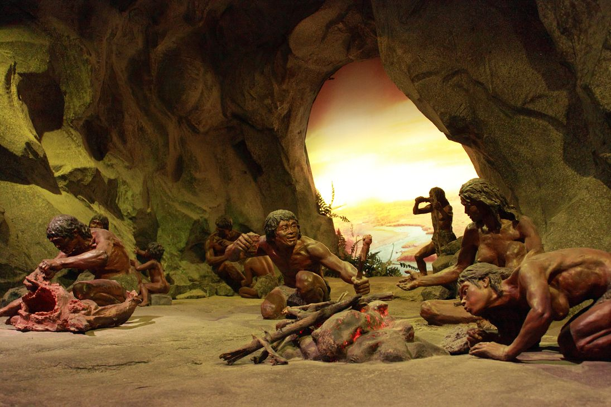
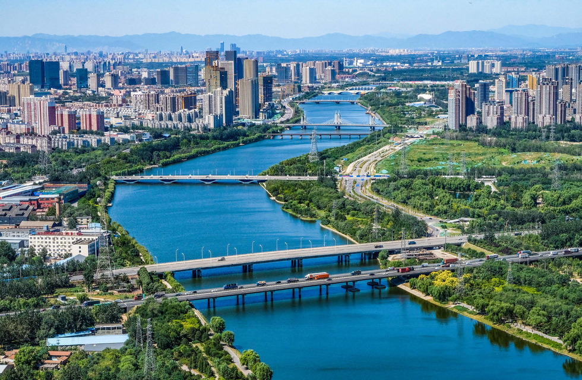
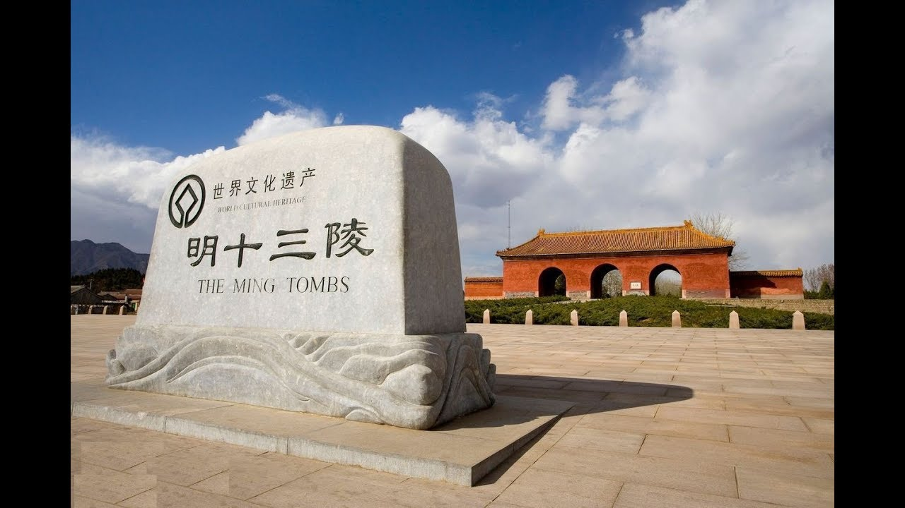
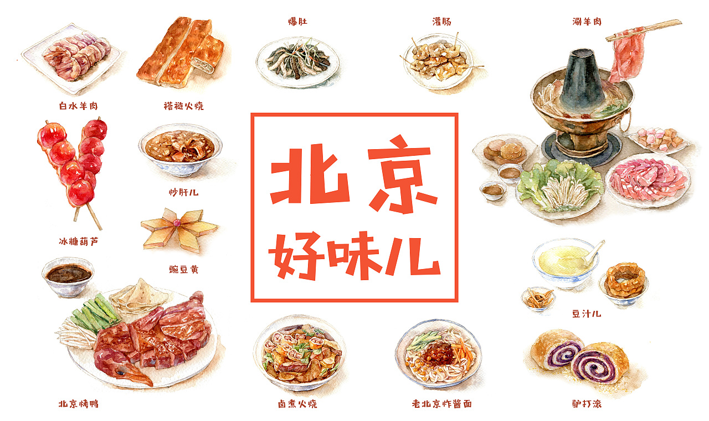

About Beijing
Beijing (Chinese: 北京; Latvian: Pekina) is the capital of the People's Republic of China. It is the political center, cultural center, international communication center and scientific and technological innovation center of the country. Beijing is the world's most populous national capital city, with over 21 million residents within an administrative area of 16,410.5 km2.
Seven World Heritage Sites in Beijing
Beijing is a magnificent place to visit. One of the world’s most exciting and interesting cities, Beijing boasts a whopping seven UNESCO World Heritage Sites. From prehistoric humans, to ancient and modern Chinese culture, the UNESCO sites in Beijing are both varied and inspiring. Read on for a brief introduction of the seven World Heritage Sites in Beijing.
- The Forbidden City (故宫博物院) 
- The Summer Palace (颐和园) 
- Temple of Heaven (天坛公园) 
- The Great Wall of Badaling (八达岭长城) 
- Peking Man Site (周口店北京人遗址) 
- The Grand Canal (大运河) 
- Imperial Tombs of the Ming & Qing Dynasties (明十三陵) 
The Forbidden City was constructed from 1406 to 1420, and was the former Chinese imperial palace and winter residence of the Emperor of China from the Ming dynasty (since the Yongle Emperor) to the end of the Qing dynasty, between 1420 and 1924. The Forbidden City served as the home of Chinese emperors and their households and was the ceremonial and political center of the Chinese government for over 500 years. Since 1925, the Forbidden City has been under the charge of the Palace Museum, whose extensive collection of artwork and artifacts were built upon the imperial collections of the Ming and Qing dynasties. The Forbidden City was declared a World Heritage Site in 1987.
Official website:
HERE
The Summer Palace is a vast ensemble of lakes, gardens and palaces in Beijing. It was an imperial garden in the Qing dynasty. Inspired by the gardens in South China, in the Summer Palace there are over 3,000 various Chinese ancient buildings that house a collection of over 40,000 kinds of valuable historical relics from each dynasty. In December 1998, UNESCO included the Summer Palace on its World Heritage List. It declared the Summer Palace "a masterpiece of Chinese landscape garden design. The natural landscape of hills and open water is combined with artificial features such as pavilions, halls, palaces, temples and bridges to form a harmonious ensemble of outstanding aesthetic value".
Official website:
HERE
The Temple of Heaven, founded in the first half of the 15th century, is a dignified complex of fine cult buildings set in gardens and surrounded by historic pine woods. In its overall layout and that of its individual buildings, it symbolizes the relationship between earth and heaven – the human world and God's world – which stands at the heart of Chinese cosmogony, and also the special role played by the emperors within that relationship.
Official website:
HERE
Badaling Great Wall, about 60 km northwest of central Beijing, was the first section restored to open to tourists in 1957. The portion of the wall running through the site was built in 1504 during the Ming Dynasty, along with a military outpost reflecting the location's strategic importance. Badaling is the most representative and magnificent section of the Ming Great Wall and has been visited by over 500 state leaders, including presidents Nixon and Reagan, Prime Minister Thatcher, and Queen Elizabeth II.
More information:
HERE
Scientific work at the site, which lies 42 km south-west of Beijing, is still underway. So far, it has led to the discovery of the remains of Sinanthropus pekinensis, who lived in the Middle Pleistocene, along with various objects, and remains of Homo sapiens sapiens dating as far back as 18,000–11,000 B.C. The site is not only an exceptional reminder of the prehistorical human societies of the Asian continent, but also illustrates the process of evolution.
More information:
HERE
The Grand Canal is a vast waterway system in the north-eastern and central-eastern plains of China, running from Beijing in the north to Zhejiang province in the south. Constructed in sections from the 5th century BC onwards, it was conceived as a unified means of communication for the Empire for the first time in the 7th century AD (Sui dynasty). This led to a series of gigantic construction sites, creating the world’s largest and most extensive civil engineering project prior to the Industrial Revolution. It formed the backbone of the Empire’s inland communication system, transporting grain and strategic raw materials, and supplying rice to feed the population. By the 13th century it consisted of more than 2,000 km of artificial waterways, linking five of China’s main river basins. It has played an important role in ensuring the country’s economic prosperity and stability and is still in use today as a major means of communication.
More information:
HERE
It represents the addition of three Imperial Tombs of the Qing Dynasty in Liaoning to the Ming tombs inscribed in 2000 and 2003. The Three Imperial Tombs of the Qing Dynasty in Liaoning Province include the Yongling Tomb, the Fuling Tomb, and the Zhaoling Tomb, all built in the 17th century. Constructed for the founding emperors of the Qing Dynasty and their ancestors, the tombs follow the precepts of traditional Chinese geomancy and fengshui theory. They feature rich decoration of stone statues and carvings and tiles with dragon motifs, illustrating the development of the funerary architecture of the Qing Dynasty. The three tomb complexes, and their numerous edifices, combine traditions inherited from previous dynasties and new features of Manchu civilization.
More information:
HERE
Food and More
Chinese cuisine is renowned all over the world for its appearance, aroma, and flavour. As the capital of China for over 800 years, Beijing developed its own unique cuisine incorporating the best features of different regional styles and reached its present form in Qing Dynasty (1644 AD - 1911 AD). Here you can find some of the most famous dishes and snacks in Beijing.
- Beijing Roast Duck
- Zhajiangmian - Noodles with Soybean Paste
- Tanghulu - Sugar coated fruits on stick
- Hotpot
More information: HERE